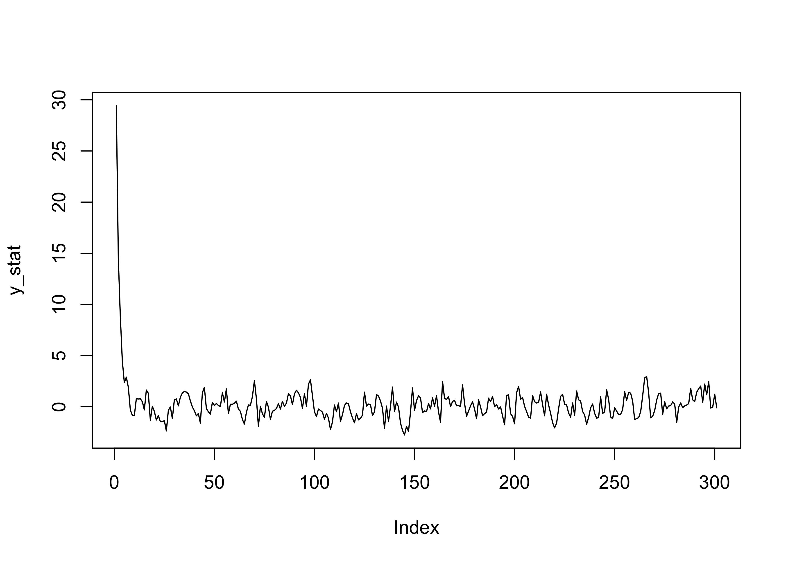
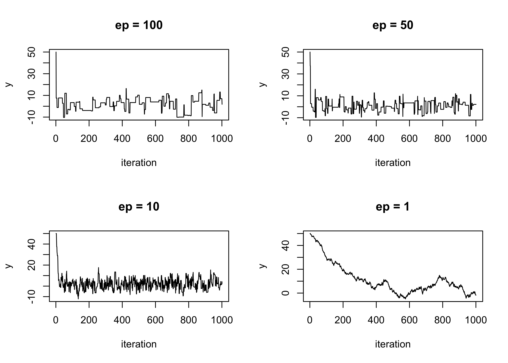
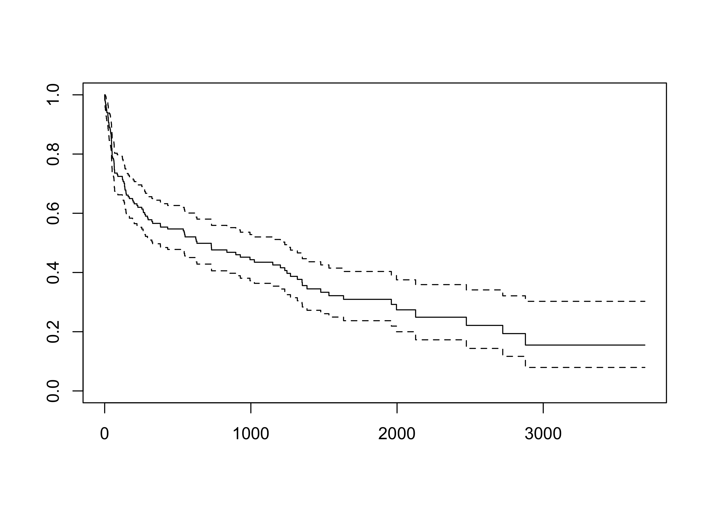

R <- 300
# Stationary process
set.seed(123)
rho <- 0.5
y_stat <- numeric(R + 1)
y_stat[1] <- rnorm(1, 30, 1)
for(r in 1:R){
y_stat[r + 1] = rho * y_stat[r] + rnorm(1)
}
plot(y_stat, type = "l")
Unit A.1: R programming and MCMC
The following code allows to simulate from an autoregressive process. Autoregressive processes provide a simple illustration of Markov chains on continuous state-space.
Let Y^{(0)} \sim N(10, 1) and let us define
Y^{(r)} = \rho Y^{(r-1)} + \epsilon^{(r)}, \qquad \phi \in \mathbb{R},
with the error terms \epsilon^{(r)} being iid according to a standard Gaussian \text{N}(0,1).
Then the sequence of Y^{(r)} forms indeed a Markov chain and the transition density is such that
(y^{(r)} \mid y^{(r-1)}) \sim \text{N}(\rho y^{(r-1)}, 1).
If the parameter |\rho| < 1 then the Markov chain has a more “stable” behaviour (i.e. the process is stationary).
Suppose we wish to simulate from a Gaussian distribution \text{N}(\mu, \sigma^2) using a MH algorithm, whose density is \pi(y).
This is obviously a toy example, because in practice one would just use rnorm. For the proposal distribution q(y^* \mid y), we can use a uniform random walk, namely
y^* = y + u, \qquad u \sim \text{Unif}(-\epsilon, \epsilon).
The choice of \epsilon > 0 will have an impact on the algorithm, as we shall see.
Random walks are symmetric proposals distributions, so q(y^* \mid y) = q(y \mid y^*). This means the acceptance probability \alpha is equal to \alpha(y^*, y) = \min\left\{1, \frac{\pi(y^*)} {\pi(y)}\right\}.
The implementation in R for a generic Gaussian with mean mu and standard deviation sig is the following code. Morerover, here x0 is the starting value and ep corresponds to \epsilon.
norm_mcmc <- function(R, mu, sig, ep, x0) {
# Initialization
out <- numeric(R + 1)
out[1] <- x0
# Beginning of the chain
x <- x0
# Metropolis algorithm
for(r in 1:R){
# Proposed values
xs <- x + runif(1, -ep, ep)
# Acceptance probability
alpha <- min(dnorm(xs, mu, sig) / dnorm(x, mu, sig), 1)
# Acceptance / rejection step
accept <- rbinom(1, size = 1, prob = alpha)
if(accept == 1) {
x <- xs
}
out[r + 1] <- x
}
out
}par(mfrow = c(2,2))
plot(sim1, type = "l", main = "ep = 100", ylab = "y", xlab = "iteration")
plot(sim2, type = "l", main = "ep = 50", ylab = "y", xlab = "iteration")
plot(sim3, type = "l", main = "ep = 10", ylab = "y", xlab = "iteration")
plot(sim4, type = "l", main = "ep = 1", ylab = "y", xlab = "iteration")
bvnorm_mcmc <- function(R, rho, ep, x0) {
out <- matrix(0, R + 1, 2)
out[1, ] <- x0
x <- x0
for(r in 1:R){
for(j in 1:2){
xs <- x
xs[j] <- x[j] + runif(1, -ep[j], ep[j])
alpha <- min(dbvnorm(xs, rho) / dbvnorm(x, rho), 1) # Acceptance probability
accept <- rbinom(1, size = 1, prob = alpha) # Acceptance / rejection step
if(accept == 1) {
x[j] <- xs[j]
}
}
out[r + 1, ] <- x
}
out
}hearth datasetIn first place, let us load the stanford2 dataset, which is available in the survival R package. As described in the documentation, this dataset includes:
Survival of patients on the waiting list for the Stanford heart transplant program.
See also the documentation of the hearth dataset for a more complete description. The survival times are saved in the time variable which can be either complete (status = 1) or censored (status = 0).
Let \textbf{t} = (t_1,\dots,t_n)^\intercal be the vector of the observed survival times and let \textbf{d} = (d_1,\dots,d_n)^\intercal be the corresponding binary vector of censorship statuses. We load in R these quantities and we obtain the Kaplan-Meier estimate of the survival function.
library(survival)
t <- stanford2$time # Survival times
d <- stanford2$status # Censorship indicator
# Kaplan-Meier estimate
fit_KM <- survfit(Surv(t, d) ~ 1)
plot(fit_KM)
We are interested in fitting a Bayesian model for estimating the survival function and quantify the associated uncertainty. A common parametric model for survival data is the Weibull model, which has the following density, hazard and survival functions
f(t \mid \alpha, \beta) = \frac{\alpha}{\beta}\left(\frac{t}{\beta}\right)^{\alpha - 1}\exp\left\{- \left(\frac{t}{\beta}\right)^{\alpha}\right\}, \quad h(t \mid \alpha, \beta) = \frac{\alpha}{\beta}\left(\frac{t}{\beta}\right)^{\alpha - 1}, and S(t \mid \alpha, \beta) = \exp\left\{- \left(\frac{t}{\beta}\right)^{\alpha}\right\}. The likelihood for this parametric model, under suitable censorship assumptions, is the following
\mathscr{L}(\alpha, \beta; \textbf{t},\textbf{d}) \propto \prod_{i=1}^n h(t_i \mid \alpha, \beta)^{d_i} S(t_i \mid \alpha, \beta) = \prod_{i : d_i=1}f(t_i \mid \alpha, \beta) \prod_{i: d_i = 0}S(t_i \mid \alpha,\beta), because f(t \mid \alpha, \beta) = h(t\mid \alpha,\beta)S(t \mid \alpha, \beta).
The above likelihood can be naively implemented in R as follows:
The log-likelihood is written in terms of products, which are numerically very unstable. Note for example that we may get -Inf, which is due to numerical inaccuracies.
The following two implementation are instead numerically stable but not efficient
# 1st inefficient implementation
loglik_inefficient1 <- function(t, d, alpha, beta) {
n <- length(t) # Sample size
log_hazards <- numeric(n)
log_survivals <- numeric(n)
for (i in 1:n) {
log_hazards[i] <- d[i] * ((alpha - 1) * log(t[i] / beta) + log(alpha / beta))
log_survivals[i] <- -(t[i] / beta)^alpha
}
sum(log_hazards) + sum(log_survivals)
}
# 2nd inefficient implementation
loglik_inefficient2 <- function(t, d, alpha, beta) {
n <- length(t) # Sample size
log_hazards <- NULL
log_survivals <- NULL
for (i in 1:n) {
log_hazards <- c(log_hazards, d[i] * ((alpha - 1) * log(t[i] / beta) + log(alpha / beta)))
log_survivals <- c(log_survivals, -(t[i] / beta)^alpha)
}
sum(log_hazards) + sum(log_survivals)
}The following implementation is instead numerically accurate and more efficient
library(rbenchmark) # Library for performing benchmarking
benchmark(
loglik1 = loglik(t, d, alpha = 0.5, beta = 1000),
loglik2 = loglik_inefficient1(t, d, alpha = 0.5, beta = 1000),
loglik3 = loglik_inefficient2(t, d, alpha = 0.5, beta = 1000),
columns = c("test", "replications", "elapsed", "relative"),
replications = 1000
) test replications elapsed relative
1 loglik1 1000 0.005 1.0
2 loglik2 1000 0.028 5.6
3 loglik3 1000 0.150 30.0Within the Bayesian framework, we need to specify also prior distributions. Since the focus of the course is on computations we will not explore the sensitivity to the prior and we present a single “reasonable” choice. Note that both \alpha,\beta are strictly positive, therefore we could choose
\theta_1 = \log{\alpha} \sim \text{N}(0,100), \qquad \theta_2 = \log(\beta) \sim \text{N}(0,100).
Hence, in R we can define the log-prior and the log-posterior in terms of the transformed parameters \theta = (\theta_1, \theta_2) as follows
We aim at obtainins (possibly correlated) samples from the posterior distribution
f(\theta_1,\theta_2 \mid \textbf{t},\textbf{d}) \propto \mathscr{L}(\theta_1, \theta_2; \textbf{t},\textbf{d})f(\theta_1)f(\theta_2), recalling that \theta_1 = \log{\alpha} and \theta_2 = \log{\beta}. This can be done using a random walk Metropolis-Hastings algorithm.
The algorithm we described is implemented in R in the following.
# R represent the number of samples
# burn_in is the number of discarded samples
RMH <- function(R, burn_in, t, d) {
out <- matrix(0, R, 2) # Initialize an empty matrix to store the values
theta <- c(0, 0) # Initial values
logp <- logpost(t, d, theta) # Log-posterior
for (r in 1:(burn_in + R)) {
theta_new <- rnorm(2, mean = theta, sd = 0.25) # Propose a new value
logp_new <- logpost(t, d, theta_new)
alpha <- min(1, exp(logp_new - logp))
if (runif(1) < alpha) {
theta <- theta_new # Accept the value
logp <- logp_new
}
# Store the values after the burn-in period
if (r > burn_in) {
out[r - burn_in, ] <- theta
}
}
out
}We can now run the algorithm. We choose R = 50000 and burn_in = 5000.
# Grid of values on which the survival function is computed
grid <- seq(0, 3700, length = 50)
# Initialized the empy vectors
S_mean <- numeric(length(grid))
S_upper <- numeric(length(grid))
S_lower <- numeric(length(grid))
for (i in 1:length(grid)) {
S_mean[i] <- mean(pweibull(grid[i], shape = fit_MCMC[, 1], fit_MCMC[, 2], lower.tail = FALSE))
S_lower[i] <- quantile(pweibull(grid[i], shape = fit_MCMC[, 1], fit_MCMC[, 2], lower.tail = FALSE), 0.025)
S_upper[i] <- quantile(pweibull(grid[i], shape = fit_MCMC[, 1], fit_MCMC[, 2], lower.tail = FALSE), 0.975)
}